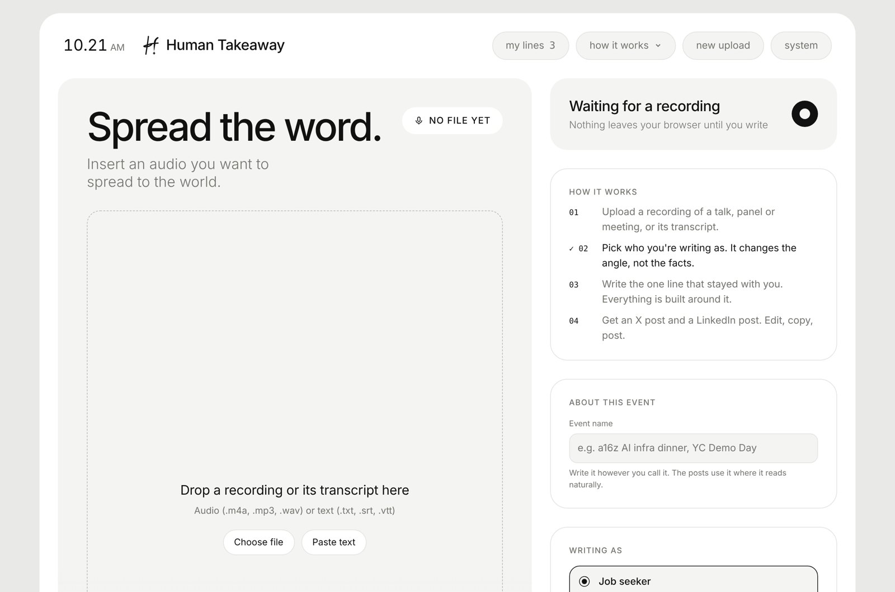
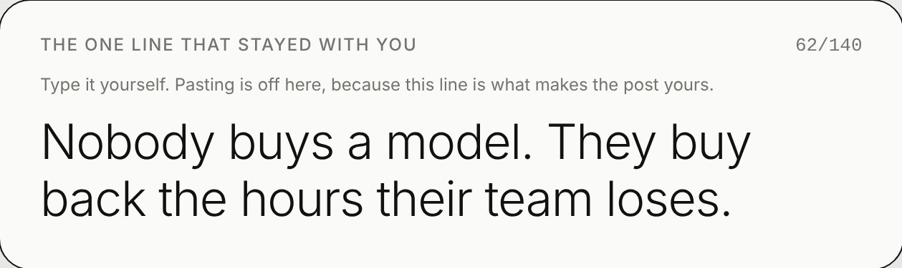
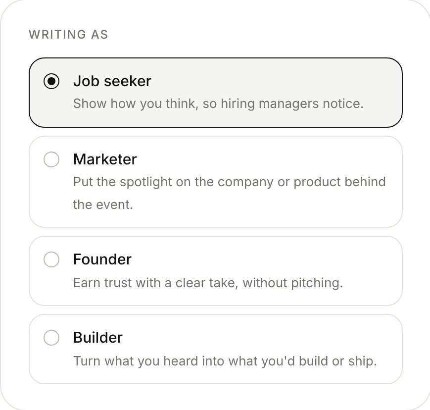
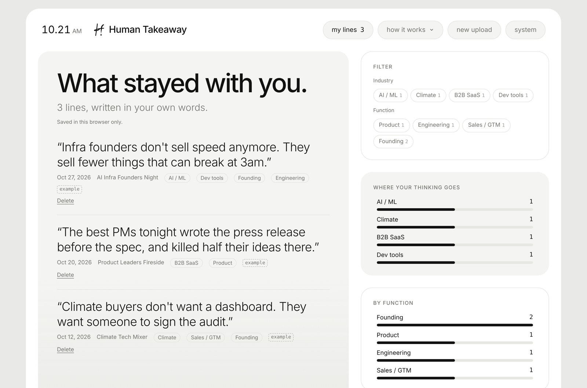

Human Takeaway
AI can write the post. The takeaway has to be yours.

- What
- Talk recording → X and LinkedIn posts
- Input
- Audio or transcript, plus your one line
- Built with
- Claude, speech-to-text, Supabase
- Status
- Working prototype
Event posts recap the speaker, and everyone's sounds the same
After a good talk, panel or founder dinner, the post you write is how people see what you think. Most of those posts summarize what someone else said on stage. Ask an AI to write one and it gets more fluent and even less yours.
The part worth reading is the one thing that stuck with you. So I built the tool around that.
- In tech
- Speech-to-text, then an LLM that plans a thesis from your line and grounds it in the transcript
- For humans
- You bring the thought. It finds the proof and writes the post.
The one line you have to type yourself
Everything is built around a single line of up to 140 characters: the takeaway you'd repeat to a friend. Pasting is turned off for that box on purpose. If the line is yours, the post is yours, however much the AI writes around it.

Four steps, one post per channel
Upload
A recording of a talk, panel or meeting, or its transcript. Audio is transcribed for you.
Pick a role
Job seeker, marketer, founder or builder. It changes the angle, not the facts.
Write your line
The one line that stayed with you. Everything is built around it.
Post
Get an X post and a LinkedIn post. Edit, copy, post.

Plan the argument first, then write
The writing runs in two passes. An editor pass decides what your line actually argues and which details prove it. Only then does a writer pass draft each post in the voice of that channel.
Decide the argument
- Thesis: your line as one plain claim, and why it matters
- Support: at most two details from the transcript that prove it
- Spine: two to five beats, each serving the thesis
Write for each channel
- X: one post, never over 220 characters
- LinkedIn: first two lines under 200 characters
- Then one-tap edits: shorter, sharper, drier, more casual
- Never inventNo facts, names, numbers or quotes that aren't in the transcript or your line.
- Distrust the transcriptAuto transcripts mishear names and numbers, so it only uses them when context makes them clearly right.
- Keep credit straightA speaker's story stays the speaker's. You were in the audience unless the transcript shows otherwise.
- No baitNo hashtags, no emoji, no "Agree?". Posts end on your own thought unless you turn on a light call to action.
Your takeaways become a map of your thinking
Every line you write is saved with the event and tags for industry and function, suggested from the transcript. Over time the library shows where your thinking goes. Sign in with Google to keep lines across devices, and mark each one public or private.

Want to try it after your next event?
Ask me for access